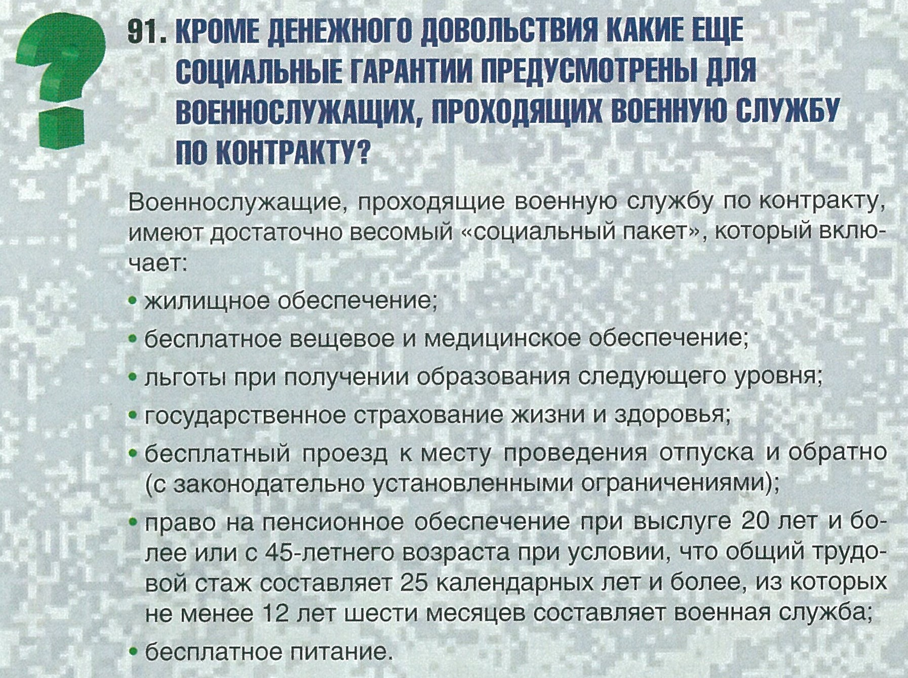

Вернуться на главную
Вопросы:
✪ Из чего состоит денежное довольствие военнослужащего?
✪ В каких размерах получают денежное довольствие военнослужащие, проходящие военную службу по контракту?
✪ По истечении какого времени военнослужащему по контракту устанавливается надбавка за уровень физической подготовленности?
✪ Что такое районный коэффициент и процентная надбавка, и как они влияют на денежное довольствие?
✪ Как ознакомиться с информацией о начисленном денежном довольствии?
✪ Предусмотрено ли денежное пособие при увольнении с военной службы?
✪ Кроме денежного довольствия какие еще социальные гарантии предусмотрены для военнослужащих, проходящих военную службу по контракту?
✪ Как осуществляется продовольственное обеспечение военнослужащих, проходящих военную службу по контракту?
✪ Как можно получить среднее профессиональное образование или высшее образование во время прохождения военной службы по контракту и какие льготы предусмотрены для военнослужащих по контракту при поступлении в гражданские ВУЗы?
✪ Предоставляется ли военнослужащим по контракту, обучающимся в образовательных организациях, учебный отпуск для подготовки и сдачи зачетов и экзаменов в период учебной сессии?
✪ Влияет ли уровень образования на карьерный рост военнослужащего?
✪ Кто может стать участником накопительно-ипотечной системы и как в нее вступить?
✪ Что будет с квартирой в случае увольнения с военной службы по окончании контракта или по собственному желанию при выслуге менее 20 лет?
✪ На каких условиях военнослужащим по контракту предоставляется служебное жилье?
✪ Если участник накопительно-ипотечной системы не воспользовался правом на получение целевого жилищного займа, когда он сможет получить накопления, учтенные на его именной накопительный счет?
✪ Какая сумма выплачивается военнослужащему за наем жилья?
